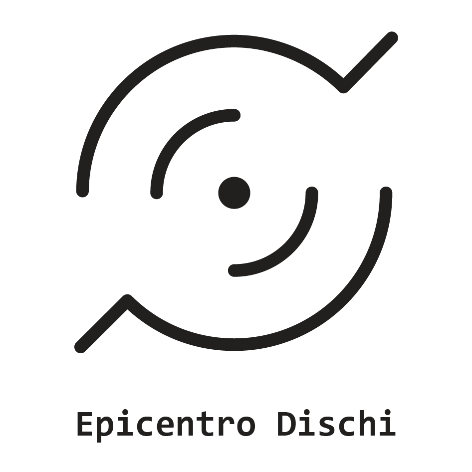
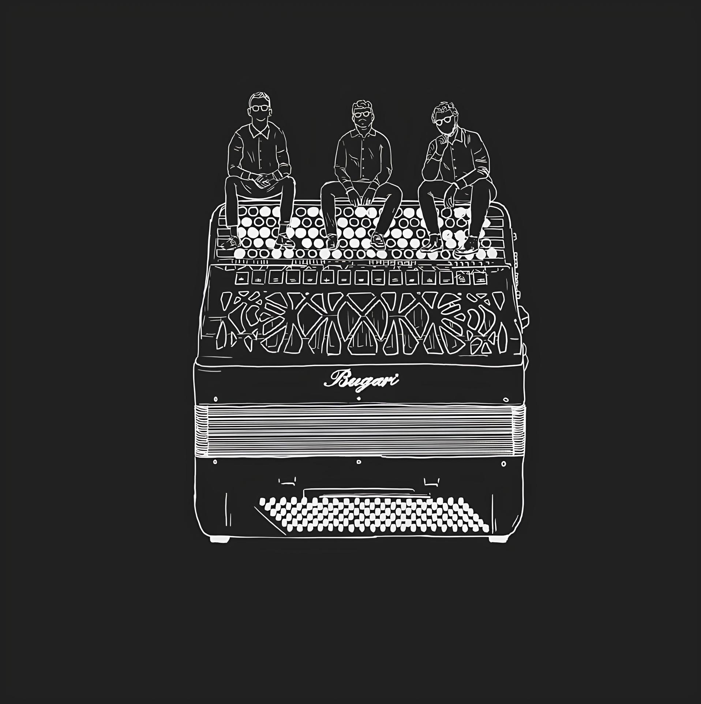

Classical Music
Transcriptions and interpretations of works from the great classical tradition, reimagined for the Trio Spectrum formation while respecting the style and identity of the original compositions.
Italian bayan chamber ensemble devoted to artistic excellence, tradition and contemporary musical exploration.

Trio Spectrum is an Italian chamber ensemble founded in 2023 by three musicians united by the desire to explore new artistic perspectives through an original ensemble formation.
Composed of three bayans — free-reed instruments belonging to the accordion family — the Trio stands out for its musical research, highlighting the richness of its timbre, its expressive versatility and the unique interpretative possibilities of this distinctive ensemble.
Through a journey based on study, exploration and musical exchange, Trio Spectrum presents concert programmes spanning different eras and musical languages, contributing to the recognition and development of this ensemble within the contemporary music scene.
Trio Spectrum's repertoire is born from the desire to create concert programmes capable of engaging diverse audiences, crossing different eras, styles and musical languages. Transcriptions, arrangements and original compositions come together in an artistic journey that combines tradition, exploration and innovation.
Transcriptions and interpretations of works from the great classical tradition, reimagined for the Trio Spectrum formation while respecting the style and identity of the original compositions.
Original compositions and contemporary works exploring new sonic languages, offering a privileged space for timbral research and the expressive potential of the ensemble.
Iconic film music and original arrangements, conceived to highlight the dialogue between the three instruments and offer audiences engaging programmes with a strong communicative impact.
Thematic programmes designed for theatres, festivals, concert seasons and cultural events, created to showcase the versatility of the ensemble and adapt to different artistic contexts.
Trio Spectrum has received important awards in national and international competitions, distinguishing itself for the quality of its interpretations, its chamber music interaction and the originality of its artistic vision.

Oltre i Confini is Trio Spectrum's first recording project and represents a synthesis of the artistic journey developed by the ensemble since its foundation.
The title reflects the desire to overcome stylistic, cultural and sonic boundaries, creating a dialogue between different repertoires and offering new listening perspectives through a unique chamber ensemble.
The album presents a musical journey that intertwines tradition and contemporary expression, research and interpretation, offering audiences an authentic reflection of Trio Spectrum's artistic identity.
The recording project Oltre i Confini is available on the main digital platforms and as a physical edition.
Through the links below, listeners can stream the album or purchase the physical copy, supporting Trio Spectrum's artistic project.

Trio Spectrum's artistic journey also develops through its collaboration with Bugari, a historic company from Castelfidardo dedicated to the craftsmanship and production of accordions.
From the dialogue with this important artisan reality comes a project that combines musical research, tradition and innovation: the recording of Lupin, the renowned piece by Franco Micalizzi, in the arrangement by Maestro Walter Di Girolamo.
The music video, filmed inside the Bugari headquarters and shared on digital platforms, tells the story of the encounter between the world of music and craftsmanship, connecting the meticulous construction of the instrument with its infinite expressive possibilities.
Through this experience, Trio Spectrum continues its mission of promoting the bayan, pursuing a musical vision in which tradition and new sonic perspectives coexist.
In collaboration with
Trio Spectrum carries out an intense concert activity, collaborating with associations, musical institutions and cultural organisations in Italy and abroad.
The programmes presented guide audiences through different eras, styles and musical languages, with the aim of combining tradition, exploration and innovation.
Each concert is conceived as an engaging musical experience, highlighting the expressive richness of the ensemble and bringing audiences closer to original repertoires and unique sound worlds.
Throughout its artistic activity, Trio Spectrum has collaborated with numerous associations, musical institutions and concert organisers, taking part in festivals, concert series and cultural events.
For information, artistic collaborations, concert bookings or any enquiries regarding Trio Spectrum, please contact the ensemble using the details below.
Email
triospectrum23@gmail.com
